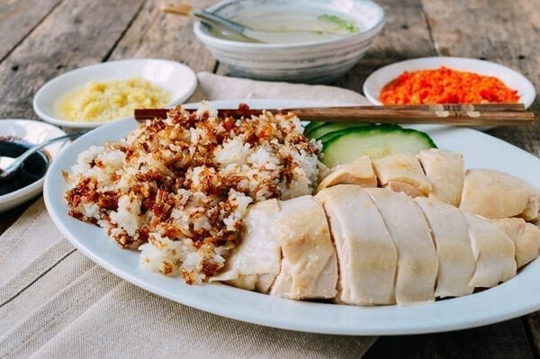

Chicken Rice

Dish of poached chicken and seasoned rice, served with chilli sauce and usually with cucumber garnishes.
Ingredients
- 1 (4 pound) whole chicken
- 3 cloves garlic
- 2 (1 inch) pieces fresh ginger root, peeled
- 2 green onions
- ½ teaspoon salt
- 2 tablespoons sesame oil
- 3 tablespoons vegetable oil
- 1 tablespoon sesame oil
- 2 shallots, finely chopped
- 5 cloves garlic, minced
- 1 (1 inch) piece fresh ginger root, peeled and chopped
- ½ cup chopped cilantro
- 4 cups chicken stock
- ½ teaspoon salt
- 3 cups long grain rice, rinsed and drained
- cilantro sprigs
- sliced green onion
- 1 cucumber, thinly sliced
- 2 fresh tomatoes, chopped
Preparation
- Bring a large pot of water to a boil. Crush 3 cloves of garlic and 2 pieces of ginger, and place them into the cavity of the chicken. Tie the green onions into a knot, and place them into the chicken along with 1/2 teaspoon of salt. Carefully submerge the chicken breast side down into the water.
- Bring to a boil, then cover and remove from heat. Let stand covered for 40 minutes, turning the chicken over half way through.
- While the chicken is cooking, heat the vegetable oil and 1 tablespoon of sesame oil in a large saucepan over medium heat. Fry the shallots, ginger, and garlic in the oil until fragrant. Add cilantro and rice, and cook, stirring until toasted. Pour in chicken stock and season with salt. Bring to a boil, then cover and reduce heat to low. Simmer until rice is tender and 'steam holes' appear in the surface of the rice, about 20 minutes.
- When the chicken is done cooking, remove it from the pot, and place under cold running water to tighten the skin. Rub the outside with sesame oil, and chop into pieces. Place pieces on a serving platter, and garnish with cilantro, green onion, cucumber and tomato. Serve with rice.
Go back home